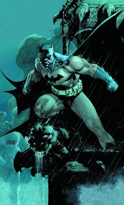

ABOUT BATMAN

Cover of the DC Comics Absolute Edition of Batman: Hush (2011)
Publication Information
- Publisher
- DC Comics
- First appearance
- Detective Comics #27 (cover-dated May 1939; published March 30, 1939)
- Created by
In-Story Information
- Alter ego
- Bruce Wayne
- Place of origin
- Gotham city
- Team affiliations
- Notable aliases
-
• Dark Knight
• Caped Crusader
• Matches Malone
• World's Greatest Detective
- Abilities
-
• Genius-level intellect
• Expert detective
• Master martial artist and hand-to-hand combatant
• Master tactician, strategist, and field commander
• Uses high-tech equipment and weapons
OFFICIAL CHARACTER PROFILE | DC COMICS
One of the most iconic fictional characters in the world, Batman has dedicated his life to an endless crusade, a war on all criminals in the name of his murdered parents, who were taken from him when he was just a child. Since that tragic night, he has trained his body and mind to near physical perfection to be a self-made Super Hero. He's developed an arsenal of technology that would put most armies to shame. And he's assembled teams of his fellow DC Super Heroes, like the Justice League, the Outsiders and Batman Incorporated.
A playboy billionaire by day, Bruce Wayne’s double life affords him the comfort of a life without financial worry, a loyal butler-turned-guardian and the perfect base of operations in the ancient network of caves beneath his family’s sprawling estate. By night, however, he sheds all pretense, dons his iconic scalloped cape and pointed cowl and takes to the shadowy streets, skies and rooftops of Gotham City.
He is vengeance. He is the night. He is Batman.
BATMAN'S ORIGIN
Young Bruce Wayne was a child of privilege, raised under the watchful eye of his parents, Thomas and Martha, in the upper echelons of Gotham City’s high society. Far removed from the city’s slow descent into corruption and chaos, Bruce enjoyed a carefree childhood with the promise of a bright and easy future, in which his family’s name and fortune would see to it that he would never want for anything.
But fate intervened before that future could ever become a reality. One night, after the Waynes exited a movie theater in one of Gotham’s rougher neighborhoods, they were caught in a mugging that left both Thomas and Martha shot dead before Bruce’s eyes. Suddenly orphaned, Bruce was left in the care of his family’s butler, Alfred Pennyworth, as he fought to survive in a world where the rules as he understood them no longer made sense.
Bruce slowly turned his grief into fuel for a lifelong obsession. Instead of succumbing to self-destruction, he swore an oath to “war on all criminals” for the rest of his life, to prevent the tragedy that occurred to him from happening to anyone else in Gotham. Inspired by the bats that infested his family’s property, and his lifelong fear of them, he took on the identity of Batman, the hero that Gotham—and the rest of the DC universe—needs. Summoned to action by the glow of the Bat-Signal, a floodlight used by his ally Commissioner Jim Gordon of the Gotham City Police Department, Batman watches over his domain as a vigilant protector and stalwart Dark Knight.
BATMAN'S POWERS AND ABILITIES
Batman does not have any metahuman abilities. Instead, he relies on his sharp mind and disciplined body, as well as his extensive combat and detective training. A master of virtually every form of martial arts, a brilliant tactician and a genius-level forensic scientist, Bruce also has access to his family’s fortune, which he’s used to create a near-limitless supply of advanced technology for his war on crime.
Housed in the Batcave beneath Wayne Manor is an armada of specialized Batmobiles and Batplanes, troves of weaponry and armor and the Batcomputer, a supercomputer that links Bruce’s technology across the globe and beyond.
Batman prides himself on being prepared for any emergency. He’s devised various fail-safes and plans for any number of potential doomsday scenarios. As the sometime leader of the Justice League and the patriarch of the Batman Family, he’s more than ready to take on whatever the universe throws at him. Armed with a utility belt full of Batarangs, a Batsuit loaded with cutting-edge technology and his own hair-trigger reflexes, Batman is ready to strike fear into the hearts of criminals everywhere.
THE GOLDEN AGE (1939-1956)

Detective Comics #27

Batman (1940) #1
It took a little time for the idea of Batman to fully form, even after he first appeared in 1939’s DETECTIVE COMICS #27. His origin story was revealed several months later, in DETECTIVE COMICS #33. And the similarly orphaned Dick Grayson—Bruce Wayne’s ward and Batman’s first sidekick, the original Robin—was introduced in 1940’s DETECTIVE COMICS #38.
As Batman evolved in those early years, so did the world around him. The existence of costumed Super-Villains in his world began with the first appearances of the Mad Monk and Hugo Strange. Catwoman and The Joker were introduced in the pages of 1940’s BATMAN #1, the Dark Knight Detective’s first solo title. Finally, Batman’s hometown—Gotham City—was given a name in 1941’s BATMAN #4.
Batman’s earliest days played a critical role in building the foundation for a vigilante who would stand the test of time. As each early issue of BATMAN and DETECTIVE COMICS hit shelves, other elements of Bruce Wayne’s world were established—the Bat-Signal in DETECTIVE COMICS #60, the first appearance of Alfred Pennyworth in BATMAN #16—all of which would further define The Caped Crusader.
In 1952 Batman and Superman (whose paths had crossed in The Adventures of Superman radio show), teamed up for the first time in comics in SUPERMAN #76, establishing a partnership that would come to be known as the World’s Finest.
THE SILVER AGE (1956-1970)

Detective Comics #327

Detective Comics (1940)
In 1960’s THE BRAVE AND THE BOLD #28, the Justice League of America first appeared, with Batman a founding, albeit initially reserve, member.
As time went by, the DC universe grew into into a Multiverse. As this concept progressed, the Batman stories of the Golden Age were said to have featured the Batman of Earth-Two, who was also a member of the Justice Society of America, went on to marry the Selina Kyle (Catwoman) of Earth-Two and have a daughter, Helena Wayne. Meanwhile, on Earth-One, Batman began fighting crime with a slightly more familiar, modern look, his chest emblem highlighted by a yellow oval (introduced in 1964’s DETECTIVE COMICS #327).
The Batman stories of the late ’50s and early ’60s were very much flavored with the sci-fi tropes of the era. Threats were less criminal and more cosmic, as antagonists like the whimsical Bat-Mite were introduced (DETECTIVE COMICS #267, 1959). During this time, Batman and Robin were also occasionally partnered with the original Batwoman (Kathy Kane) and Bat-Girl (her niece Betty). This less dark era of Batman’s history culminated in the campy 1966 megahit Batman TV show.
THE BRONZE AGE (1970-1986)

BATMAN (1940-) #251
Beginning in the late ’60s, Batman was given a new direction, putting him on a path that led to the version of Batman we know today. Unsatisfied with his distance from the heart of Gotham’s real problem—street-level crime and corruption—and left without a partner when Dick Grayson moved out of Wayne Manor to attend college, he closed down the Batcave and moved his operations to a building in the heart of Gotham’s downtown (DETECTIVE COMICS #395, 1970) in the Wayne Foundation’s penthouse.
As the Dark Knight became darker and more grounded, so did the threats he faced. The Joker returned to his homicidal roots. In 1971, the global criminal mastermind Ra’s al Ghul first appeared (in BATMAN #232), as well as his daughter Talia (in DETECTIVE COMICS #411), whose loyalty to her father was often challenged by her love for Batman.
New allies joined the ranks of the Batman Family, including Dr. Leslie Thompkins, a doctor who helped Gotham’s underclass, and Lucius Fox, who oversaw the finances of Wayne Enterprises for its often-preoccupied president.
The 1980s heralded the addition of a second Robin to Gotham City with the introduction of Jason Todd (in 1983’s BATMAN #357), whom Bruce elected to raise as his ward upon Dick Grayson’s full maturation to adulthood. Jason’s first tenure as Robin, however, didn’t last long. The 1985 event CRISIS ON INFINITE EARTHS reset the continuity of the DC Universe, as well as Batman’s. The groundbreaking, out-of-continuity limited series THE DARK KNIGHT RETURNS (1986) provided inspiration for Batman’s post-Crisis direction, despite taking place in an alternate future.
"YEAR ONE" (1987)

BATMAN: YEAR ONE1
Following the Crisis on Infinite Earths and the resulting condensing of the Multiverse, Batman was given a new, streamlined history in the acclaimed storyline “Batman: Year One,” a tale that retroactively took place in the first year of Bruce Wayne’s life as a vigilante. It detailed how, after traveling the globe and learning from the planet’s greatest martial arts masters, detectives and forensic scientists, he returned home to Gotham at the age of 25 to establish his crime-fighting career in earnest. Around this time, Bruce also met the new police commissioner, James Gordon, with whom he shared an equal concern about Gotham’s descent into corruption.
THE MODERN AGE (1987-2005)

BATMAN: KNIGHTFALL

BATMAN (2010) #608
Following “Year One,” Jason Todd was reintroduced, this time as a rough-and-tumble street kid whom Batman found trying to steal the Batmobile’s wheels. Jason again became Batman’s second Robin, though his tenure was again cut short by the events of the 1988 storyline “A Death in the Family.” In this tale, Jason was tricked by The Joker and subsequently murdered, causing Bruce to spiral into grief. Jason’s death drove Batman deeper into darkness and isolation, prompting him to act recklessly, which, in turn, placed Gotham at risk. One year later a young boy named Tim Drake took notice and, employing detective skills of his own, auditioned to be Batman’s new Robin as he attempted to rescue Batman’s soul from the darkness in the 1989 storyline “A Lonely Place of Dying.”
With a new Robin, Bruce took up his duties with renewed focus and vigor. The Batman Family changed and expanded yet again when former Batgirl Barbara Gordon (Commissioner James Gordon’s daughter) took on the role of Oracle and Harold Allnut became the Batcave’s resident mechanic.
Unbeknownst to Batman, however, a new threat had emerged on the island of Santa Prisca: the Super-Villain Bane, who set out to “break” the Bat, a goal that he accomplished across the 1993 storyline “Knightfall.” The events of “Knightfall” forced Bruce Wayne to step down from his role as Batman, while he healed a broken spine. In his stead, the zealot Azrael took on the mantle of Batman, but in doing so nearly destroyed Gotham. Fortunately, Dick Grayson stepped in for his mentor through the final months of his recovery.
Following Bruce’s return, a virus known as “The Clench” infected Gotham City in the 1996 storyline “Contagion.” Batman and his associates were able to avert disaster, but a second virus—known as “Legacy”—quickly took hold and maintained the level of crisis in the city.
Shortly thereafter, two back-to-back catastrophes struck Gotham City. In 1998’s “Cataclysm,” an earthquake sent the city into chaos. Then the city was declared a “No Man's Land” by the United States government and cut off from the outside world (in the 1999 storyline “No Man’s Land”). Bruce went underground while the city descended into tribalism and gang violence. But he resurfaced in time to assist Jim Gordon in restoring order while simultaneously thwarting Lex Luthor’s plans to buy up the city’s ruins.
Besting Luthor further complicated Bruce Wayne’s life. The villain retaliated by framing Bruce for the murder of his ex-girlfriend Vesper Fairchild, which set him at odds with both the GCPD and the rest of the Batman family (in 2002’s “Bruce Wayne: Murderer” and “Bruce Wayne: Fugitive”). As his public persona crumbled, Bruce sank deeper into his identity as Batman, spiraling into obsession yet again.
After he cleared his name and returned to the public eye, Bruce was thrown into yet another existential crisis as the events of 2003’s “Hush” storyline stirred up other ghosts from his past with the sudden return and “murder” of his childhood friend, Tommy Elliot, who turned out to be the criminal mastermind called Hush. Tommy’s relationship with Bruce during their childhood made him one of the few Super-Villains to ever deduce Batman’s true identity.
Later, when temporary Robin Stephanie Brown (formerly known as The Spoiler) inadvertently triggered one of Batman’s most lethal contingency plans, resulting in an all-out gang war in Gotham, the city fell into chaos yet again, in 2004’s “War Games.” The chaos cost Stephanie her life and placed the Super-Villain Black Mask at the top of Gotham’s proverbial criminal food chain. His reign was challenged, however, when a new player called the Red Hood appeared on the scene (in 2004’s “Under the Hood”) and began targeting Black Mask’s operations with lethal force.
Batman intervened, only to learn that Red Hood was actually Jason Todd, the second Robin, who’d returned to life hungry for a more absolute form of vengeance than his ex-mentor allowed. The ensuing fight forced Batman to confront his failure to prevent Jason’s death, but ultimately reaffirmed his refusal to take a life.
BATMAN AND SON (2006)

BATMAN (2010) #655
In 2006’s “Batman and Son” storyline, Batman’s life was thrown into upheaval yet again, with the sudden appearance of Damian Wayne—Bruce’s son. His mother, Talia al Ghul, had raised the boy in secret until he was eight years old. Talia attempted to use Damian to undermine and topple Batman, even if it meant sacrificing her son in the process. Her betrayal prompted Bruce to take in Damian, training him as Robin as he tried to curb the murderous tendencies instilled in the boy by the League of Assassins.
Bruce and Damian’s time together was cut short when a group of villains known as the Black Glove attempted to drive Bruce insane (in 2008’s “Batman R.I.P.”). At the same time, Darkseid invaded the DC Universe in the cataclysmic 2009 event FINAL CRISIS. Though the Crisis was contained, it appeared to cost Batman his life. In truth, he’d been pulled out of the time stream and forced to hopscotch through history in the lives of his ancestors. In his absence, Dick Grayson took over the mantle of Batman and protected Gotham City alongside Damian Wayne as Robin.
In 2010’s “The Return of Bruce Wayne,” Batman returned to the present. Initially, however, he dedicated himself to the Justice League while Dick Grayson continued to act as Batman within Gotham City. This arrangement, as well as that of Batman Incorporated—an international organization Bruce developed to ensure global Batman coverage—lasted until the continuity-resetting events of 2011’s FLASHPOINT miniseries.
THE NEW 52 (2011-2016)

BATMAN (2011) #1
Following 2011’s FLASHPOINT, Batman’s history was reset up to the events of his first year. In this new continuity, a younger Bruce Wayne had only been active as a vigilante in Gotham for several years, though his relationships with both the GCPD and his remaining Robins—including his son, Damian—remained largely unchanged.
Bruce’s new origin story was revealed in 2013’s “Zero Year.” In this version of events, The Riddler had taken over Gotham City after a young Bruce returned from training abroad, turning it into a wasteland that Batman had to survive as he constructed his costume, technology and identity.
In this new timeline, Batman’s first post-Flashpoint adventure revolved around the uncovering of an ancient cabal known as the Court of Owls, which had planted roots in Gotham centuries ago. In 2011’s “Court of Owls” storyline, the Court was revealed to have affected even the earliest events that had shaped Gotham. In an effort to rid the city of its new Dark Knight, whom they viewed as a threat, they enacted a purge protocol, whereby their foot soldiers, known as Talons, rose up and attacked the city from all sides (in 2012’s “Night of Owls”).
REBIRTH (2016-PRESENT)

BATMAN (2011) #1
Following the events of 2016’s DC UNIVERSE: REBIRTH #1, some of the latent memories that had been erased or overwritten by FLASHPOINT were awakened. Bruce Wayne rekindled a romance with Selina Kyle that wound up culminating in a marriage proposal that Selina accepted, though she left Gotham City when she decided that the happiness she brought Bruce Wayne would mean the end of Batman.
Credit - DC Comics